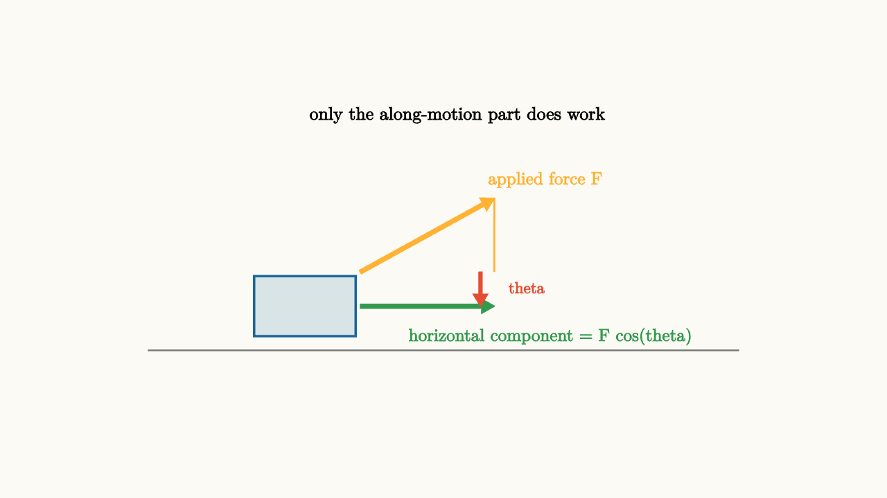
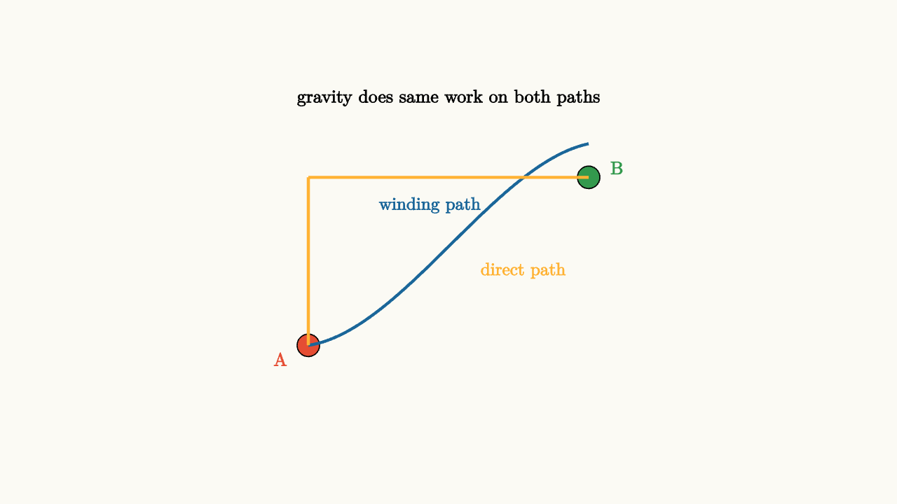

Energy Keeps Score
Suppose you are designing a roller coaster and you need to know how fast the cars will be going at the bottom of the first drop. You could use Newton's second law, tracking every force on every car at every moment as it descends. The forces change direction constantly as the track curves. The calculation would be a nightmare of trigonometry.
Or you could think about energy.
You know where the car starts: high up, essentially at rest. You know where it ends: at the bottom of the drop. The height difference is measurable. The rest follows from a single equation that does not care about the details of the path at all.
That is the power of energy. Forces are local instructions that tell you what happens moment by moment. Energy is a bookkeeper that tells you the score at the beginning and end of any trip.
What Work Means
Energy enters mechanics through the concept of work. When a force acts on an object and that object moves, the force may transfer energy to the object. The amount transferred is work.
For a constant force $\vec{F}$ acting on an object that moves through displacement $\Delta\vec{r}$:
where $\theta$ is the angle between the force and the displacement.
The dot product is not just convenient notation. It captures a geometric truth: only the component of force along the direction of motion contributes to energy transfer. If you push a cart sideways and it rolls forward, your sideways push does nothing to the cart's speed. If you push a box across the floor at an angle, only the horizontal component of your push counts.

source
background = [0.985, 0.98, 0.955, 1]
camera = Camera(4.8b)
mesh diagram = block {
. stroke{GRAY, 1.5} Line(start: [-3.2, -1.1, 0], end: [3.2, -1.1, 0])
. fill{alpha{0.15} BLUE} stroke{BLUE, 2} center{[-1.5, -0.62, 0]} Rect([1.1, 0.65])
. color{ORANGE} Arrow(start: [-0.9, -0.25, 0], end: [0.55, 0.55, 0])
. stroke{ORANGE, 1.5} Line(start: [0.55, 0.55, 0], end: [0.55, -0.25, 0])
. color{GREEN} Arrow(start: [-0.9, -0.62, 0], end: [0.55, -0.62, 0])
. color{ORANGE} center{[1.1, 0.75, 0]} Text("applied force F", 0.68)
. color{GREEN} center{[1.15, -0.95, 0]} Text("horizontal component = F cos(theta)", 0.68)
. color{BLACK} center{[0.15, 1.45, 0]} Text("only the along-motion part does work", 0.7)
. color{RED} Arrow(start: [0.4, -0.25, 0], end: [0.4, -0.62, 0])
. color{RED} center{[0.9, -0.42, 0]} Text("theta", 0.62)
}
"work as dot product"
play Fade(0.6)Three special cases clarify the geometry:
When force and displacement are parallel ($\theta = 0$), all the force goes into work. $W = F \cdot d$. This is the most efficient you can be.
When force is perpendicular to displacement ($\theta = 90°$), $\cos 90° = 0$, so $W = 0$. The centripetal force keeping a ball on a string does no work. The normal force on a sliding block does no work. Perpendicular forces steer; they do not accelerate.
When force and displacement are antiparallel ($\theta = 180°$), the work is negative: $W = -F \cdot d$. Friction opposing sliding motion does negative work, removing energy from the moving object.
Work Becomes Kinetic Energy
Where does the energy from work go? Into motion. The work-energy theorem makes this precise.
Apply Newton's second law along the direction of motion and integrate. The result is:
where kinetic energy is
This is not a new law. It is Newton's second law accumulated along a path. But the repackaging is enormously useful. Instead of tracking acceleration at every instant, you track the change in $\frac{1}{2}mv^2$ from start to finish.
The formula $\frac{1}{2}mv^2$ has a nice feel to it. Double the mass, double the kinetic energy. Double the speed, quadruple the kinetic energy. The square on velocity means that speed matters a lot. A car at 100 km/h has four times the kinetic energy of the same car at 50 km/h, which is why high-speed collisions are so much more destructive.
Variable Forces and the Area Under the Curve
A constant force is a special case. Usually forces vary along a path. Think of compressing a spring: the more you compress it, the harder it pushes back.
When force varies, work is the integral:
For a one-dimensional force $F(x)$, this is the area under the $F$-versus-$x$ graph. This is a beautiful way to think about it visually.
source
background = [0.985, 0.98, 0.955, 1]
camera = Camera(4.8b)
"constant force, simple area"
mesh axes = block {
. stroke{GRAY, 1.2} Line(start: [-2.8, -1.5, 0], end: [2.8, -1.5, 0])
. stroke{GRAY, 1.2} Line(start: [-2.6, -1.7, 0], end: [-2.6, 1.6, 0])
. color{GRAY} center{[2.75, -1.65, 0]} Text("x", 0.68)
. color{GRAY} center{[-2.45, 1.62, 0]} Text("F", 0.68)
}
mesh fline = stroke{ORANGE, 3} Line(start: [-2.2, 0.5, 0], end: [1.8, 0.5, 0])
mesh area = fill{alpha{0.2} ORANGE} Polygon(vertices: [[-2.2, -1.5, 0], [1.8, -1.5, 0], [1.8, 0.5, 0], [-2.2, 0.5, 0]])
mesh area_label = color{ORANGE} center{[-0.2, -0.5, 0]} Text("area = work", 0.7)
play Write(0.8)
"spring force, growing area"
fline = stroke{GREEN, 3} ExplicitFunc(|x| 0.55 * (x + 2.2), [-2.2, 1.8, 60])
area = fill{alpha{0.2} GREEN} Polygon(vertices: [[-2.2, -1.5, 0], [1.8, -1.5, 0], [1.8, 0.55 * 4.0, 0], [-2.2, -1.5, 0]])
area_label = color{GREEN} center{[0.2, -0.3, 0]} Text("spring work = (1/2)kx^2", 0.7)
play Trans(1.0)For a spring with constant $k$, Hooke's law says $F = kx$. The $F$-vs-$x$ graph is a straight line through the origin. The area under that line (a triangle) is $\frac{1}{2}kx^2$. That is exactly the potential energy stored in the spring. The geometry of the graph and the formula are the same thing.
Conservative Forces and Path Independence
Here is a remarkable fact about gravity: the work it does on an object moving from point A to point B depends only on the height difference, not on the path taken.
Carry a book from the floor to a shelf. Whether you go straight up, spiral around the room, or take it outside and back, gravity does the same negative work on the book (and you do the same positive work against gravity). The winding path and the direct path both require the same energy expenditure against gravity.
This is the defining property of a conservative force. The work done by a conservative force is path-independent.

source
background = [0.985, 0.98, 0.955, 1]
camera = Camera(4.8b)
mesh diagram = block {
. fill{RED} center{[-1.5, -1.0, 0]} Circle(0.12)
. fill{GREEN} center{[1.5, 0.8, 0]} Circle(0.12)
. stroke{BLUE, 2.5} ExplicitFunc(|x| -1.0 + 0.15 * (x + 1.5) + 0.55 * (x + 1.5) * (x + 1.5) - 0.12 * (x + 1.5) * (x + 1.5) * (x + 1.5), [-1.5, 1.5, 80])
. stroke{ORANGE, 2.5} Line(start: [-1.5, -1.0, 0], end: [-1.5, 0.8, 0])
. stroke{ORANGE, 2.5} Line(start: [-1.5, 0.8, 0], end: [1.5, 0.8, 0])
. color{BLUE} center{[-0.2, 0.5, 0]} Text("winding path", 0.68)
. color{ORANGE} center{[0.8, -0.2, 0]} Text("direct path", 0.68)
. color{BLACK} center{[0, 1.65, 0]} Text("gravity does same work on both paths", 0.7)
. color{RED} center{[-1.8, -1.15, 0]} Text("A", 0.7)
. color{GREEN} center{[1.8, 0.9, 0]} Text("B", 0.7)
}
"path independence of gravity"
play Fade(0.6)Because gravity is conservative, we can define gravitational potential energy as the work gravity would do if the object moved from the current position to a reference position (usually the ground). This stored work can be released later.
Near Earth's surface:
$h$ is height above the reference level. The higher an object, the more potential energy it has, and the more kinetic energy it can gain by falling.
For springs, the elastic potential energy is:
$x$ is the displacement from the spring's natural length. This energy can be released by letting the spring return to equilibrium.
The Energy Conservation Equation
When only conservative forces act, the total mechanical energy is constant:
Written between two points:
This single equation can replace an entire force analysis in many problems. Let's apply it to the roller coaster.
The car starts at height $h$ with speed $v_0 \approx 0$. It reaches the bottom (height $0$) with speed $v_f$. Energy conservation gives:
Solving:
Notice: the mass canceled. The final speed depends only on the height, not on how heavy the car is. A heavy coaster and a light coaster both reach the same speed at the bottom (ignoring friction).
Also notice: the shape of the track did not matter. Whether the drop is a straight ramp, a curved arc, or a complicated spiral, the height difference alone determines the speed. Energy conservation knows nothing about the path; it only cares about starting and ending states.
Energy Bars: A Visual Accounting System
One of the most powerful ways to think about energy is through energy bar charts. Imagine a vertical bar for kinetic energy $K$ and another for potential energy $U$. As an object moves, energy flows between the bars, but their total height stays constant.
source
param height = 1.45
background = [0.985, 0.98, 0.955, 1]
camera = Camera(4.8b)
"energy trades"
mesh ramp = stroke{GRAY, 2} Line(start: [-2.8, -1.1, 0], end: [1.6, -1.1, 0])
mesh ball = fill{ORANGE} center{[-2.8 + 4.4 * (1.55 - $height) / 1.4, $height - 0.65, 0]} Circle(0.12)
mesh bar_pe = fill{alpha{0.2} GREEN} stroke{GREEN, 2} center{[2.3, -1.1 + $height / 2, 0]} Rect([0.42, $height])
mesh bar_ke = fill{alpha{0.2} BLUE} stroke{BLUE, 2} center{[2.85, -1.1 + (1.55 - $height) / 2, 0]} Rect([0.42, 1.55 - $height])
mesh lbl_pe = color{GREEN} center{[2.3, 0.75, 0]} Text("U", 0.72)
mesh lbl_ke = color{BLUE} center{[2.85, 0.75, 0]} Text("K", 0.72)
mesh total_line = stroke{RED, 1.5} Line(start: [2.05, 0.45, 0], end: [3.1, 0.45, 0])
mesh total_label = color{RED} center{[3.5, 0.45, 0]} Text("E total", 0.68)
play Write(0.8)
"roll down"
height = 0.2
play Lerp(2.0)
"roll back up"
height = 1.45
play Lerp(2.0)As the ball rolls down, the green bar (potential energy) shrinks and the blue bar (kinetic energy) grows. The red line marks the total, which never changes. When the ball rolls back up, energy flows back into potential. The bars are a real-time ledger.
Friction Breaks Conservation
Real objects are not frictionless. When friction is present, mechanical energy is not conserved. Some kinetic energy converts into thermal energy as the surfaces rub together.
The energy does not disappear. It moves into the thermal motion of atoms and molecules. Total energy (including thermal) is still conserved. But in the mechanical bookkeeping that tracks only $K$ and $U$, energy seems to vanish.
When friction is present, the energy equation becomes:
where $E_{\text{thermal}} = f_k \cdot d$ is the thermal energy generated by kinetic friction $f_k$ over sliding distance $d$.
This tells you that friction always takes something from the mechanical energy. The final state has less $K + U$ than the initial state. A roller coaster with real track friction arrives at the bottom slower than the ideal prediction. A pendulum with air resistance swings a little lower each cycle.
The question is always: how much energy leaked out of the mechanical system into thermal?
Choosing the System
One subtlety that trips people up is the choice of system. Energy belongs to systems, not individual objects.
If you pick "the block" as your system, then gravity is an external force doing work on the block. You track $K$ of the block and work done by external forces.
If you pick "the block plus Earth" as your system, then gravity is an internal interaction. Gravitational potential energy $U_g = mgh$ lives inside the system. No work crosses the boundary from gravity.
Both approaches give the same answer if done consistently. But you must choose one. Mixing them gives nonsense.
A good rule: if you include a conservative force (gravity, spring) in your system boundary, use its potential energy. If the conservative force is external to your system, track the work it does. Never do both.
The Roller Coaster as a Full Example
Let's put it all together. A coaster car starts at rest at height $H = 30 \text{ m}$. The track has a loop of radius $r = 8 \text{ m}$, whose top is at height $h_{\text{loop}} = 16 \text{ m}$. There is also friction, which removes $\Delta E = 2000 \text{ J}$ from the system before the loop. The car has mass $m = 500 \text{ kg}$.
What is the speed at the top of the loop?
Energy conservation with friction:
We did not need to know the shape of the track between the start and the loop. We did not need to calculate any forces during the descent. The energy equation at the beginning and end is enough.
This is what it means for energy to keep score.
Unexpected Connections
The language of energy appears far beyond mechanics. In thermodynamics, the first law says that energy is conserved when heat and work are both tracked. In electromagnetism, electric potential energy plays the role of $mgh$ for charged particles. In quantum mechanics, energy levels of atoms come from solving the same kind of energy equation.
The roller coaster problem and the hydrogen atom problem use the same conceptual framework: identify the energy stores, write the conservation equation, solve for the unknown. The specific formulas for potential energy differ, but the logic is identical.
This universality is why energy is one of the deepest ideas in all of physics. It is not a property of any particular type of object or force. It is a bookkeeping principle built into the structure of physical law itself.